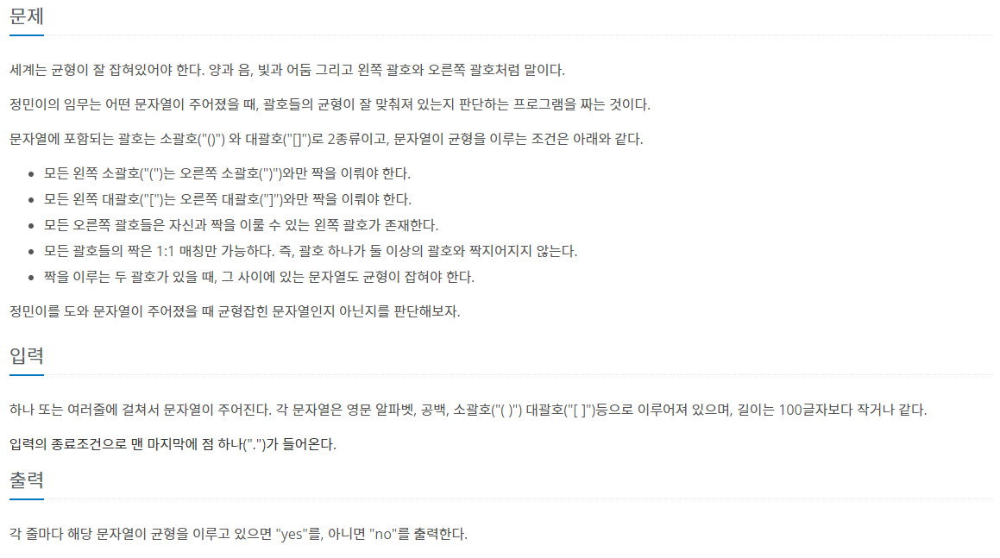
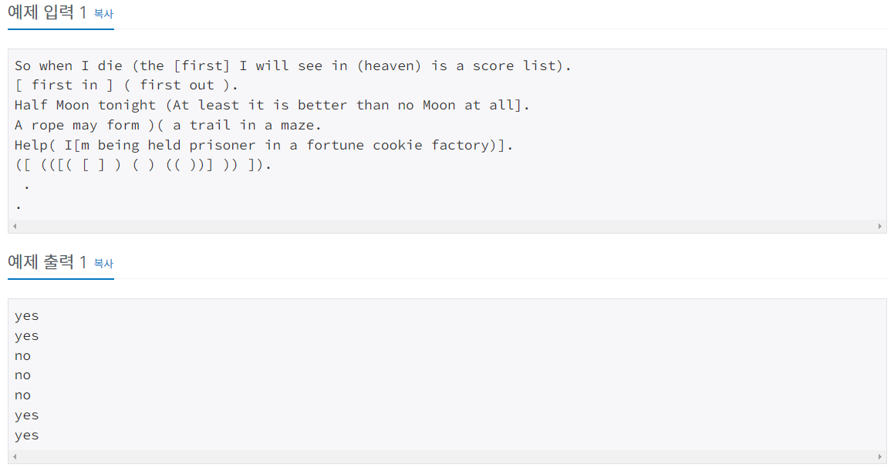
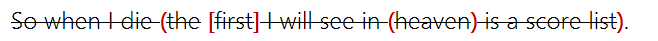
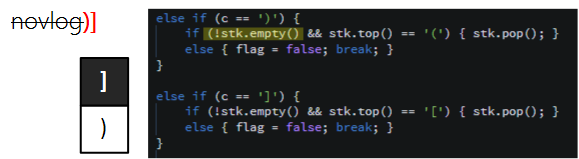
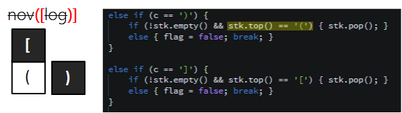
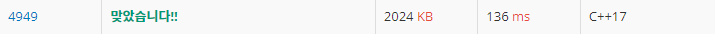

#INFO
난이도 : SIVLER4
문제유형 : DataStructure_STACK
출처 : 4949번: 균형잡힌 세상 (acmicpc.net)
4949번: 균형잡힌 세상
하나 또는 여러줄에 걸쳐서 문자열이 주어진다. 각 문자열은 영문 알파벳, 공백, 소괄호("( )") 대괄호("[ ]")등으로 이루어져 있으며, 길이는 100글자보다 작거나 같다. 입력의 종료조건으로 맨 마
www.acmicpc.net
 
#SOLVE
코드에서 중요한 포인트는 다음과 같습니다.
1. bool 타입 flag 변수를 통해 균형잡힌 문자열 인지 판별
2. 오른쪽 괄호가 나왔을 때 스텍이 비어 있는지 확인
3. 문자열 입력이므로 cin이 아닌 getline 함수 사용
우선, 문자열을 입력받을 str 변수를 선언하고, 공백을 포함한 문자열을 입력받아야 하므로 cin이 아닌 getline 함수로 문자열을 입력받습니다. 다음으로 왼쪽 괄호를 저장할 스텍과 균형잡인 문자열인지 판별할 bool 타입 flag 변수를 선언합니다.
while(true) {
string str;
getline(cin, str);
if (str == ".") {
break;
}
stack<char> stk;
}다음으로 문자열의 길이만큼 for 반복문을 돌리는데, 일반 문자 (알파벳 등)은 균형잡힌 문자열 여부에 영향을 주지 않기에 따로 카운트 하지 않고, 괄호가 나올 때 마다 if 분기문을 수행합니다.
왼쪽 괄호 "(" or "[" 가 나올 때는 스택(stk)에 푸시합니다.
오른쪽 괄호 ")" or "]" 가 나올 때는 스택의 top이 각각 "(" or "[" 이고, 스택이 비어있지 않다면 스택에 들어있는 왼쪽 괄호를 pop 합니다. 조건에 부합하지 않다면, flag를 false로 초기화 시켜주고 반복문에서 break 합니다.

for (int i = 0; i < str.length(); ++i) {
char c = str[i];
if (c == '(') { stk.push('('); }
else if (c == '[') stk.push('[');
else if (c == ')') {
if (!stk.empty() && stk.top() == '(') { stk.pop(); }
else { flag = false; break; }
}
else if (c == ']') {
if (!stk.empty() && stk.top() == '[') { stk.pop(); }
else { flag = false; break; }
}
}
오른쪽 괄호가 나왔을 때의 if 분기문을 조금 더 자세하게 설명 하도록 하겠습니다.
첫 번째 조건인 !stk.empty() 스택이 비어있는 지 확인하는 이유는 아래와 같은 상황을 방지하기 위함입니다. 스택이 비어있다면 오른쪽 괄호와 맞는 짝이 없다는 뜻이기에, 균형잡힌 문자열이 아닙니다.

두 번째 조건인 괄호의 짝이 맞는지 확인하는 이유는 아래와 같이 짝이 맞지 않으면 균형잡힌 문자열의 조건에 부합하지 않기 때문입니다.

마지막으로 스택이 모두 비어있고, flag가 true라면 "yes"를 아니면 "no"를 출력해 주면 됩니다.
if (flag == true && stk.empty()) {
cout << "yes" << endl;
}
else {
cout << "no" << endl;
}#CODE
#include <iostream>
#include <stack>
#include <string>
using namespace std;
int main(){
while(true) {
string str;
getline(cin, str);
if (str == ".") {
break;
}
stack<char> stk;
bool flag = true;
for (int i = 0; i < str.length(); ++i) {
char c = str[i];
if (c == '(') { stk.push('('); }
else if (c == '[') stk.push('[');
else if (c == ')') {
if (!stk.empty() && stk.top() == '(') { stk.pop(); }
else { flag = false; break; }
}
else if (c == ']') {
if (!stk.empty() && stk.top() == '[') { stk.pop(); }
else { flag = false; break; }
}
}
if (flag == true && stk.empty()) {
cout << "yes" << endl;
}
else {
cout << "no" << endl;
}
}
return 0;
}